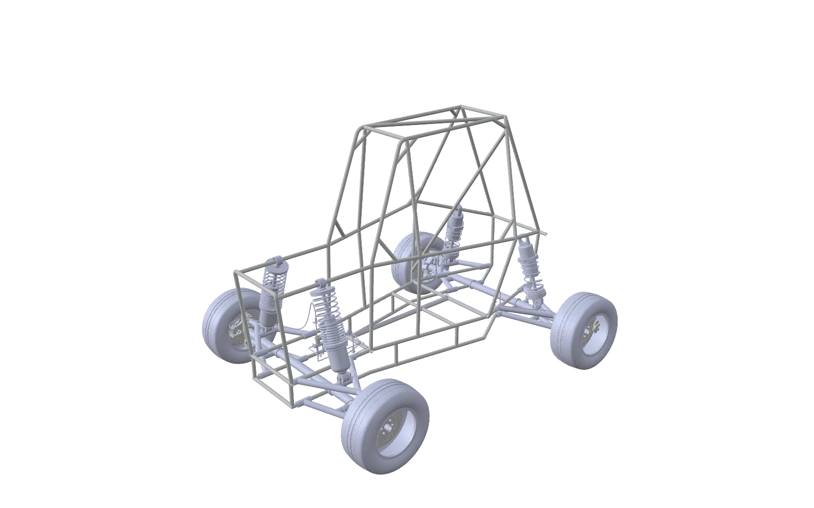

SAEIIITDM Kurnool

To rotate and zoom the car, enable graphics (hardware) acceleration in your browser settings, then relaunch your browser.
Chrome: Settings → System → Use graphics acceleration when available.
From the first sketch
to what comes next.
A student community exploring automotive engineering through ideas, collaboration, and hands-on learning.
Meet the chapterEngineering is a team sport.
Bring your curiosity.
EngineersDiscover our work
Built on
curiosity.
About SAE IIITDM Kurnool
The classroom is
just the starting line.
We are the SAE student chapter at the Indian Institute of Information Technology, Design and Manufacturing Kurnool. A place for students to explore how things move, how they are made, and how to make them better.
Our interests meet at the intersection of automotive design, practical engineering, and working together. Ideas grow through discussion, experimentation, and sharing what we learn.
Explore our instituteThink it.
Make it.
Different disciplines.
One shared drive.
Design & engineering
Where an idea takes shape. Explore CAD, component design, vehicle systems, and the decisions that connect them.
- CAD & modelling
- Vehicle systems
- Design reviews
Build & experiment
Turn questions into practical exploration. Learn about manufacturing, materials, assembly, and testing through the engineering process.
- Materials & fabrication
- Assembly
- Testing & iteration
Learn & share
Knowledge travels further when it is shared. Bring a question, discuss an approach, and document the lessons for the next person.
- Technical discussions
- Peer learning
- Field notes
No one
builds alone.
Good engineering depends on more than one point of view. Design, manufacturing, electronics, and documentation all have a place in the process.
Whether you are starting with a question or bringing a skill to share, curiosity is a good place to begin.
Find us onlineFrom the notebook.
All field notesBefore the first part is made.
ProcessBuild. Test. Ask better questions.
TeamworkLeave a trail for the next engineer.
Let's build
what's next.
Follow the chapter’s website development or explore the institute we call home.